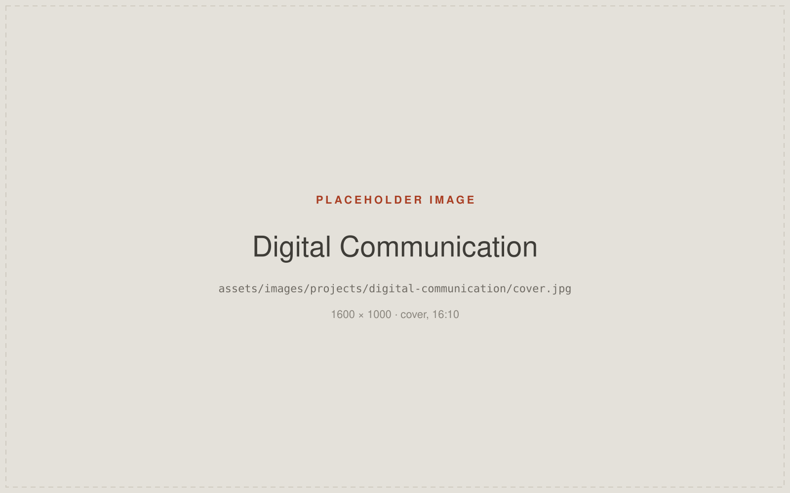
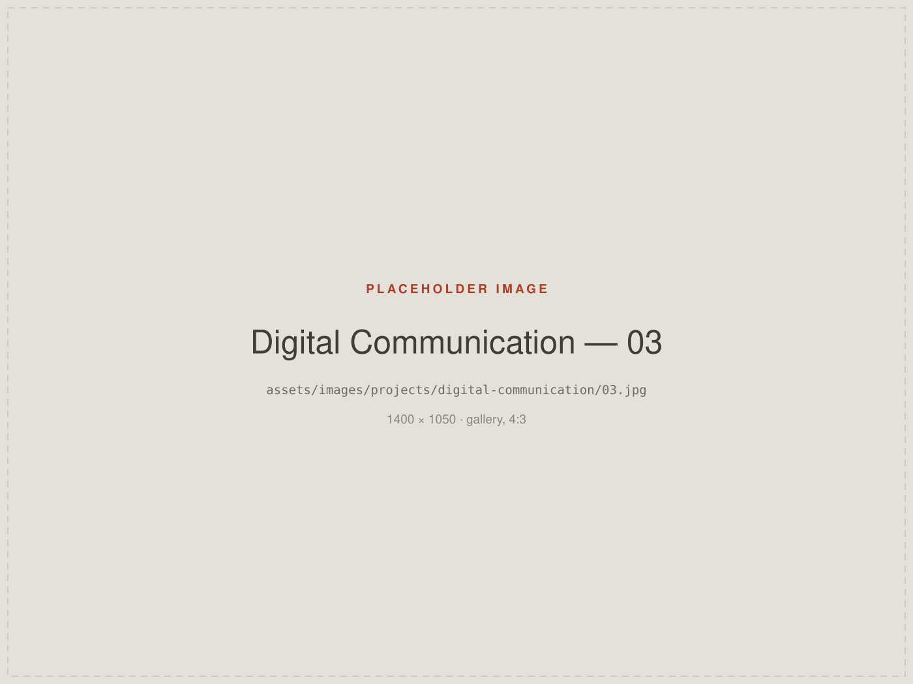

Growing a Manufacturing Brand's Digital Presence
Contributed to the growth of VOEPL's LinkedIn audience from approximately 300 to 1,600+ followers through consistent visual communication and content.
- Role
- Digital Marketing Executive — content design and visual communication
- Organisation
- Virtuoso Optoelectronics Limited (VOEPL)
- Disciplines
- Content Design · Social Media · Visual Communication
- Channel

Context
LinkedIn is where a manufacturing company's professional audience actually is — customers, suppliers, industry peers and prospective colleagues. For an OEM/ODM business, it is less a marketing channel than a running demonstration of competence.
I contributed to VOEPL's presence there through the design and content side: what gets posted, what it looks like, and whether it holds together over months.
Challenge
Manufacturing subject matter is not inherently easy to make engaging. Products are technical, processes are hard to photograph well, and the temptation is to post either dry specifications or generic corporate filler.
The challenge was to make the feed consistently recognisable and worth following — so that the account read as one considered voice rather than a series of unrelated announcements.
Role
This was a team effort, and the audience growth below reflects that. My contribution was the design and content work.
- Content design for LinkedIn
- Visual communication and post design
- Visual storytelling around products and capabilities
- Maintaining consistency across the feed over time
Approach
Consistency as the mechanism
A recognisable visual treatment does more for a company feed than any single strong post. Shared typography, framing and colour meant the account became identifiable in a scroll.
Design the recurring formats
Rather than designing each post from scratch, the work leaned on repeatable formats for the things that come up regularly — product communication, capability highlights, company updates.
Respect the audience's expertise
The audience includes people who know the subject well. Content was designed to be clear without being simplistic.
Selected work
Placeholders below — see ASSETS.md.

Outcome
-
300 → 1,600+
Approximate VOEPL LinkedIn follower growth during the period of my contribution
This is the one figure on this site with a number attached to it, and it is deliberately stated as a contribution rather than a personal result. No engagement rates, reach figures or conversion metrics are claimed, because none have been verified.